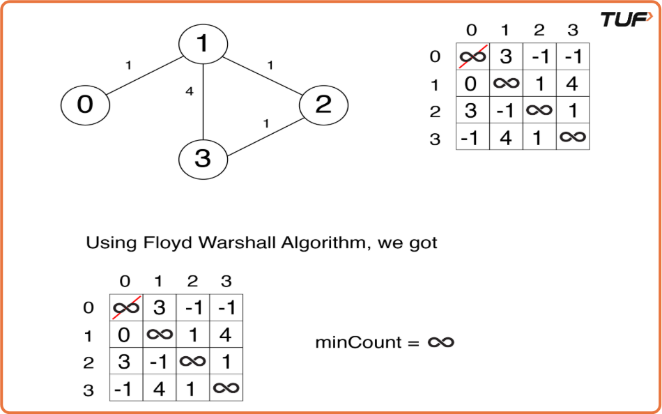
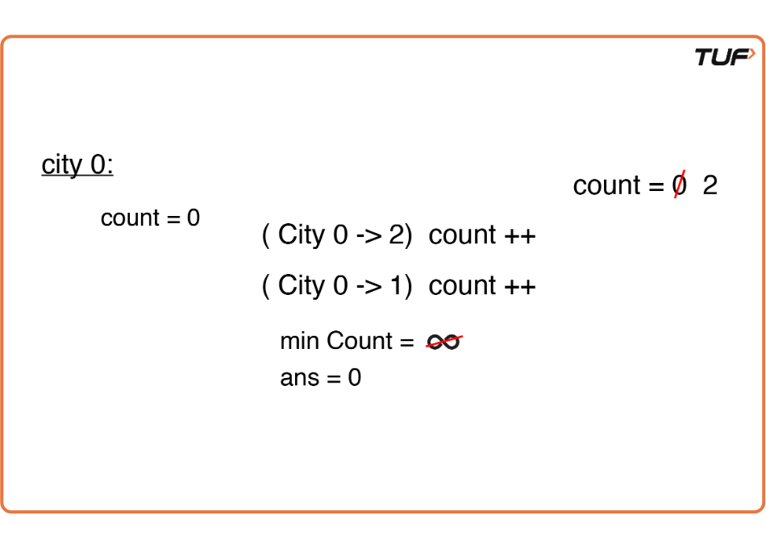
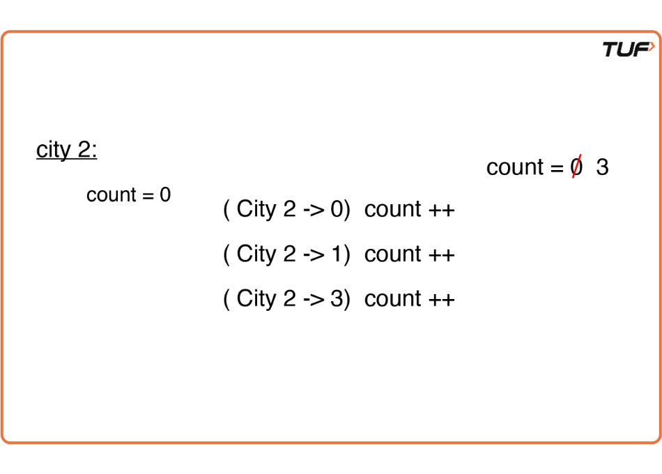
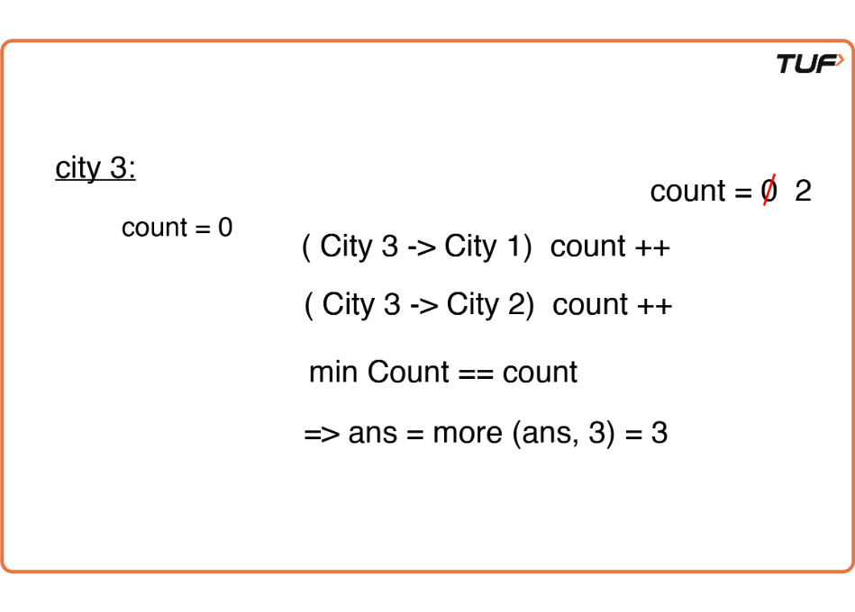

Find the City With the Smallest Number of Neighbours at a Threshold Distance: G-43
Problem Statement:
There are n cities numbered from 0 to n-1. Given the array edges where edges[i] = [fromi, toi,weighti] represents a bidirectional and weighted edge between cities fromi and toi, and given the integer distance Threshold. You need to find out a city with the smallest number of cities that are reachable through some path and whose distance is at most Threshold Distance, If there are multiple such cities, our answer will be the city with the greatest number.
Note: that the distance of a path, connecting cities i and j are equal to the sum of the edges' weights along that path.
Examples
Example 1: Input: N=4, M=4, edges = [[0,1,3],[1,2,1],[1,3,4],[2,3,1]], distanceThreshold = 4 Result: 3 Explanation: The adjacent cities for each city at a distanceThreshold are: City 0 → [City 1, City 2] City 1 → [City 0, City 2, City 3] City 2 → [City 0, City 1, City 3] City 3 → [City 1, City 2] Here, City 0 and City 3 have a minimum number of cities (2) within the distanceThreshold. The city with the largest number is City 3. So, the result is City 3. Example 2: Input: N=3, M=2, edges = [[0,1,3],[1,2,1]], distanceThreshold = 2 Result: 2 Explanation: City 1 → City 2, City 2 → City 1 Hence, City 2 is the answer.
Disclaimer: Here is the practice link to help you assess your knowledge better. It's highly recommend trying to solve it before looking at the solution.
Approach
Algorithm
- Initialize the adjacency matrix (dist) with all cells set to infinity (∞).
- Set cntCity to V (number of nodes), representing the maximum possible value.
- Set cityNo to -1, which will store the answer for the node with the largest value and minimum cntCity.
- Algorithm steps:
- Iterate over the edges and set the values of dist[fromi][toi] and dist[toi][fromi] to the edge weight (as the edges are bidirectional).
- Run a loop from 0 to V-1 (where V is the number of vertices) to check the path via node k for every possible pair of nodes.
- Within the loop, use two nested loops to generate every possible pair of nodes (to visit each cell of the adjacency matrix).
- Apply the following formula to calculate the shortest distance between nodes:
- dist[i][j] = min(dist[i][j], dist[i][k] + dist[k][j])
- After applying the formula, the adjacency matrix will store the shortest paths for each node (dist[i][j] will give the shortest path from node i to node j).
- Count the nodes (cnt) with a distance less than or equal to distanceThreshold and check if it is smaller than the current value of cntCity.
- If the count is smaller, update cntCity with the count and cityNo with the current node value.
- Return cityNo as the final answer.
- If we need to find the number of adjacent cities, return cntCity - 1 (since the node itself is included in the count).




Code
#include <bits/stdc++.h>
using namespace std;
class Solution {
public:
// Method to find the city with the least reachable cities within the threshold distance
int findCity(int n, int m, vector<vector<int>>& edges, int distanceThreshold) {
// Initialize the distance matrix with a large value (INT_MAX)
vector<vector<int>> dist(n, vector<int> (n, INT_MAX));
// Set the distance for each edge
for (auto it : edges) {
dist[it[0]][it[1]] = it[2]; // Set the distance from city1 to city2
dist[it[1]][it[0]] = it[2]; // Set the distance from city2 to city1
}
// Set the diagonal to 0, as the distance from a city to itself is 0
for (int i = 0; i < n; i++) dist[i][i] = 0;
// Apply Floyd-Warshall Algorithm to find the shortest paths between all pairs of cities
for (int k = 0; k < n; k++) {
for (int i = 0; i < n; i++) {
for (int j = 0; j < n; j++) {
// Update the distance if a shorter path is found
if (dist[i][k] == INT_MAX || dist[k][j] == INT_MAX)
continue;
dist[i][j] = min(dist[i][j], dist[i][k] + dist[k][j]);
}
}
}
// Initialize variables to track the city with the least reachable cities
int cntCity = n;
int cityNo = -1;
// Check each city and count the number of cities within the threshold distance
for (int city = 0; city < n; city++) {
int cnt = 0;
for (int adjCity = 0; adjCity < n; adjCity++) {
// If the distance to the adjacent city is within the threshold, increment count
if (dist[city][adjCity] <= distanceThreshold)
cnt++;
}
// Update the city with the least number of reachable cities
if (cnt <= cntCity) {
cntCity = cnt;
cityNo = city;
}
}
return cityNo;
}
};
int main() {
// Input data
int n = 4;
int m = 4;
vector<vector<int>> edges = {{0, 1, 3}, {1, 2, 1}, {1, 3, 4}, {2, 3, 1}};
int distanceThreshold = 4;
// Create an object of the Solution class
Solution obj;
// Find the city with the least reachable cities within the threshold distance
int cityNo = obj.findCity(n, m, edges, distanceThreshold);
// Output the result
cout << "The answer is node: " << cityNo << endl;
return 0;
}Complexity Analysis
Time Complexity: O(V3) , as we have three nested loops each running for V times, where V = number of vertices.
Space Complexity: O(V2) , where V = number of vertices. This space complexity is due to storing the adjacency matrix of the given graph.